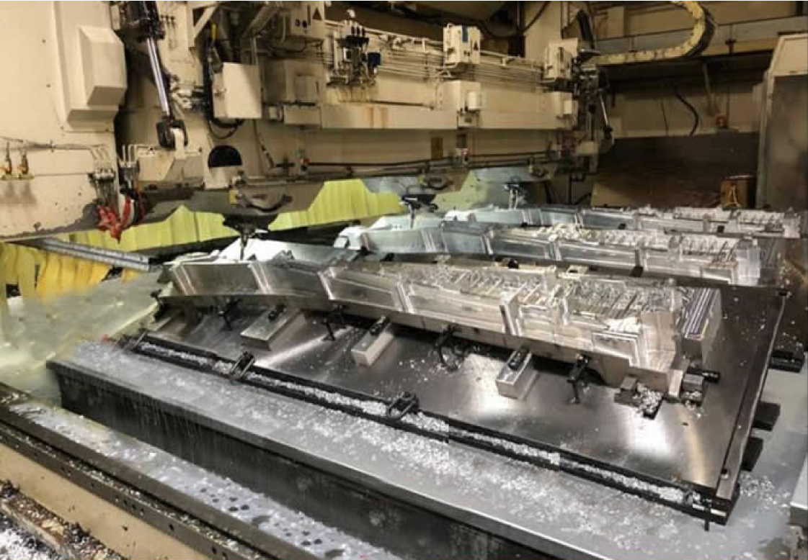

Adding to our growing list of awards for Boeing’s new 777X, Acromil was recently awarded a contract to manufacture Thrust Reverser Hinge and Latch Beam assemblies. These assemblies are a crucial component of the Engine Nacelles on the new 777X , housing the new GE9X engines that features the largest fan built by GE. As a highly sophisticated project requiring an advanced skill set, and the knowledgeable, experienced leadership to manage the exacting processes and procedures, this award represents Acromil’s next step in our evolution into a major assembly provider to the Aerospace Industry.
777X Hinge and Latch beam Contract
September 2017
